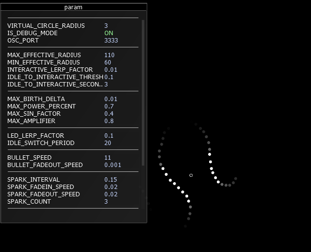

Portfolio
2008 - 2013
2008 - Prototype - Virtual Drum
Computer Vision / Motion detection / Audio generation
2011 - Nike - FOS Faceoff
Visualization / Particle System / Network Connection

Agency: Super Nature Design
- Processing for the scoreboard
- openFrameworks for the particle system
- MFC for login dialog
- OSC protocol for network communication

Realtime visualization of speed
2011 - Event - Realtime Weibo Visualization

- Fetch weibo with #keyword#
- Display profile icon
- Dynamic background
The software can be easily modifed at the field.

2012 - Game - McDonalds vs KFC
- Microphone can be used as a controller
- Developed in 24 hours
- Can be played on Windows / Linux / MacOSX
2013 - Prototype - Kinect Fruit Ninja
Kinect / TUIO / Multi-touch
2013 - Prototype - Leap Motion Fruit Ninja
Leap Motion / TUIO / Multi-touch
2013 - Shanghai Film Museum - River of Dreams
Multi-touch tracking / CCV (Core Community Vision) customization

Agency: CRE Imagnation

High-performance

CCV with lots of improvements

2013 - Nike - Flex Interactive Lighting
Infrared Camera / Computer Vision / Visualization

Agency: Super Nature Design

LED visualizaton and controller
